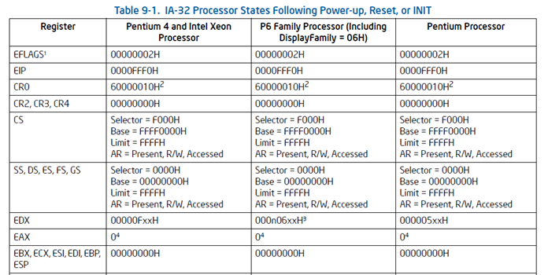
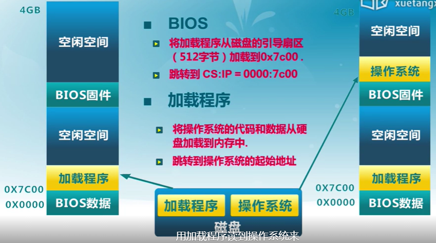
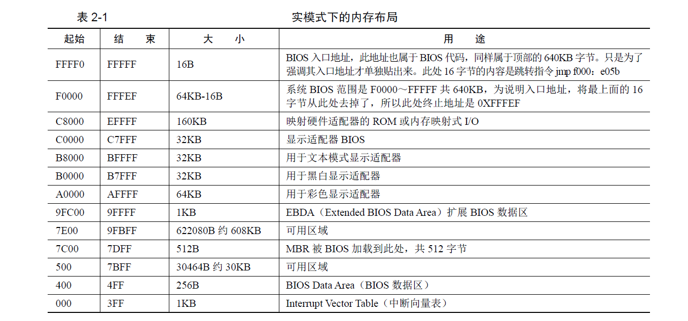
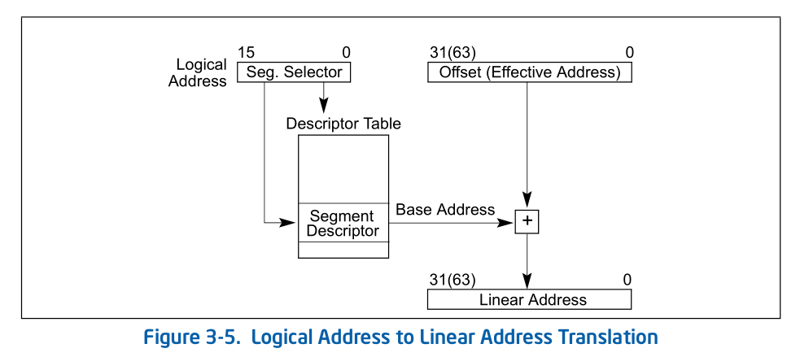
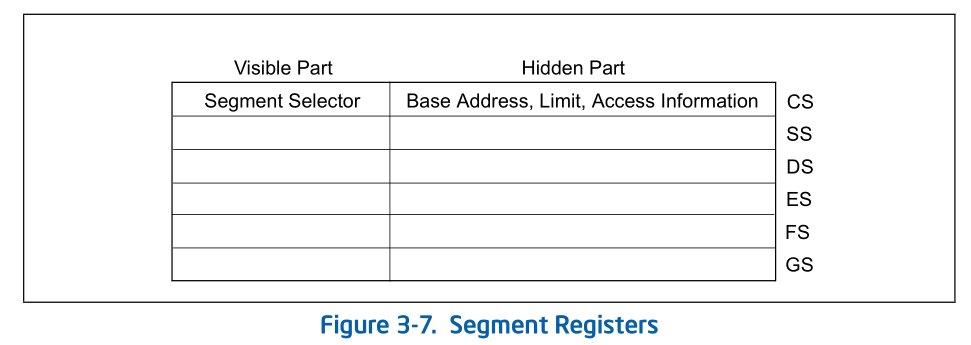
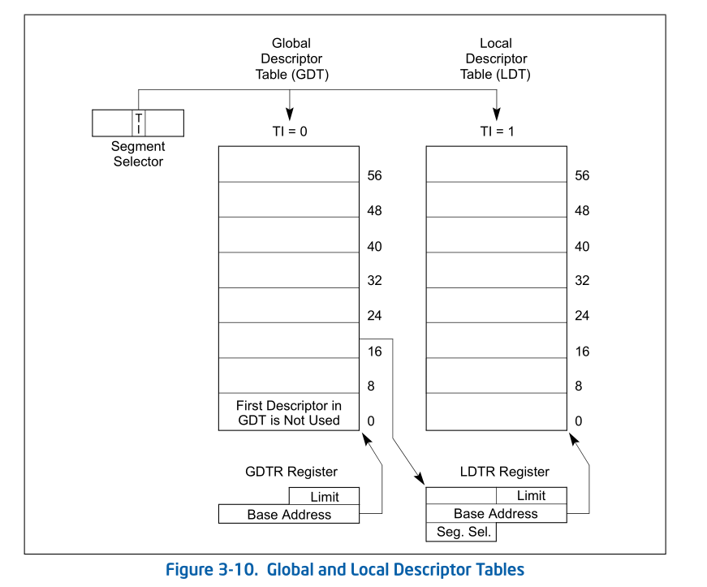

Tsinghua操作系统课程
不可视境界线最后变动于：1 小时前
Lab1
知识点
1.BIOS启动顺序
- CPU加电后代码段寄存器初始化为CS = F000H, EIP = 0000FFF0H, 然后再计算 Base+IP = FFFF0000H + 0000FFF0H = FFFFFFF0H 得到BIOS的EPROM(Erasable Programmable Read Only Memory)所在地, 这个地址的第一条指令是一个长跳转指令(这样CS和EIP都会更新)到BIOS代码中执行
- BIOS做完计算机硬件自检和初始化后，会选择一个启动设备（例如软盘、硬盘、光盘等），并且读取该设备的第一扇区(即主引导扇区或启动扇区)到内存一个特定的地址0x7c00处，然后CPU控制权会转移到那个地址继续执行。至此BIOS的初始化工作做完了，进一步的工作交给了ucore的bootloader。
附:
- 在16位的8086 CPU时代，内存限制在1MB范围内，且BIOS的代码固化在EPROM中。在基于Intel的8086 CPU的PC机中的EPROM被编址在1ＭB内存地址空间的最高64KB中。PC加电后，CS寄存器初始化为0xF000，IP寄存器初始化为0xFFF0, CS:IP=0xF000:0XFFF0（Segment:Offset 表示）=0xFFFF0(Linear表示)
- 默认将执行BIOS ROM编址在32位内存地址空间的最高端，即位于4GB地址的最后一个64KB内。在PC系统开机复位时，CPU进入实模式，并将CS寄存器设置成0xF000，将它的shadow register的Base值初始化设置为0xFFFF0000，EIP寄存器初始化设置为0x0000FFF0。所以机器执行的第一条指令的物理地址是0xFFFFFFF0。80386的BIOS代码也要和以前8086的BIOS代码兼容，故地址0xFFFFFFF0处的指令还是一条长跳转指令
jmp F000:E05B。注意，这个长跳转指令会触发更新CS寄存器和它的shadow register，即执行jmp F000 : E05B后，CS将被更新成0xF000。表面上看CS其实没有变化，但CS的shadow register被更新为另外一个值了，它的Base域被更新成0x000F0000，此时形成的物理地址为Base+EIP=0x000FE05B，这就是CPU执行的第二条指令的地址。此时这条指令的地址已经是1M以内了，且此地址不再位于BIOS ROM中，而是位于RAM空间中。由于Intel设计了一种映射机制，将内存高端的BIOS ROM映射到1MB以内的RAM空间里，并且可以使这一段被映射的RAM空间具有与ROM类似的只读属性。所以PC机启动时将开启这种映射机制，让4GB地址空间的最高一个64KB的内容等同于1MB地址空间的最高一个64K的内容，从而使得执行了长跳转指令后，其实是回到了早期的8086 CPU初始化控制流，保证了向下兼容
例图:
 2.实模式
参考资料:《Intel 80386 Reference Programmers Manual-i386》, 基本是这个的翻译
在bootloader接手BIOS的工作后，当前的PC系统处于实模式（16位模式）运行状态，在这种状态下软件可访问的物理内存空间不能超过1MB，且无法发挥Intel 80386以上级别的32位CPU的4GB内存管理能力。
实模式将整个物理内存看成分段的区域，程序代码和数据位于不同区域，操作系统和用户程序并没有区别对待，而且每一个指针都是指向实际的物理地址。这样，用户程序的一个指针如果指向了操作系统区域或其他用户程序区域，并修改了内容，那么其后果就很可能是灾难性的。通过修改A20地址线可以完成从实模式到保护模式的转换。有关A20的进一步信息可参考“关于A20 Gate”。
- 地址
0-0x9ffff的640KB内存是DRAM，即插在主板上的内存条。
顶部0xf0000-0xfffff的64KB内存是ROM，存放BIOS代码。 - EPROM是通过地址来访问的, 80386将其映射到内存的顶端, 其他的一些外设也同样通过映射到地址空间来访问它们
3.分段机制/保护模式
a.保护模式
只有在保护模式下，80386的全部32根地址线有效，可寻址高达4G字节的线性地址空间和物理地址空间，可访问64TB（有2^14^个段，每个段最大空间为2^32^字节）的逻辑地址空间，可采用分段存储管理机制和分页存储管理机制。这不仅为存储共享和保护提供了硬件支持，而且为实现虚拟存储提供了硬件支持。通过提供4个特权级和完善的特权检查机制，既能实现资源共享又能保证代码数据的安全及任务的隔离。
【补充】保护模式下，有两个段表：GDT（Global Descriptor Table）和LDT（Local Descriptor Table），每一张段表可以包含8192 (2^13)个描述符[1]，因而最多可以同时存在2 * 2^13 = 2^14^个段。虽然保护模式下可以有这么多段，逻辑地址空间看起来很大，但实际上段并不能扩展物理地址空间，很大程度上各个段的地址空间是相互重叠的。目前所谓的64TB（2^(14+32)^=2^46^）逻辑地址空间是一个理论值，没有实际意义。在32位保护模式下，真正的物理空间仍然只有2^32字节那么大。注：在ucore lab中只用到了GDT，没有用LDT。
Reference: [1] 3.5.1 Segment Descriptor Tables, Intel® 64 and IA-32 Architectures Software Developer’s Manual
b.分段机制
b,c,d顺序按照35年前的i386文档, 图片来自IA-32文档
将内存划分成以起始地址和长度限制这两个二维参数表示的内存块，这些内存块就称之为段（Segment）。编译器把源程序编译成执行程序时用到的代码段、数据段、堆和栈等概念在这里可以与段联系起来，二者在含义上是一致的
转换逻辑地址（Logical Address,应用程序员看到的地址）到物理地址（Physical Address, 实际的物理内存地址）分以下两步：
[1] 分段地址转换：
[2] 分页地址转换，这一步中把线性地址转换为物理地址。（注意：这一步是可选的，由操作系统决定是否需要。在后续试验中会涉及。
c.Segment Selector
- A segment selector is a 16-bit identifier for a segment (see Figure 3-6). It does not point directly to the segment,
but instead points to the segment descriptor that defines the segment.

d.Segment register
For virtually any kind of program execution to take place, at least the code-segment (CS), data-segment (DS), and stack-segment (SS) registers must be loaded with valid segment selectors.
three additional data-segment registers (ES, FS, and GS) are optional
For a program to access a segment, the segment selector for the segment must have been loaded in one of the
segment registers. So, although a system can define thousands of segments, only 6 can be available for immediate
use.shadow register(“hidden” part):
When a segment selector is loaded into the visible part, the processor also loads the hidden part from the segment descriptor pointed to by the segment selector
e.Segment Descriptor
来自IA-32文档 P2902/3-10 Vol. 3A
f.Global Descriptor Tables
(IA-32 P2906/ 3-14 Vol. 3A):
全局描述符表的是一个保存多个段描述符的“数组”，其起始地址保存在全局描述符表寄存器GDTR中。GDTR长48位，其中高32位为基地址，低16位为段界限。由于GDT 不能有GDT本身之内的描述符进行描述定义，所以处理器采用GDTR为GDT这一特殊的系统段。注意，全局描述符表中第一个段描述符设定为空段描述符。GDTR中的段界限以字节为单位。对于含有N个描述符的描述符表的段界限通常可设为8*N-1。
g.Privilege Level
- Current privilege level (CPL) — The CPL is the privilege level of the currently executing program or task. It
is stored in bits 0 and 1 of the CS and SS segment registers. Normally, the CPL is equal to the privilege level of
the code segment from which instructions are being fetched. The processor changes the CPL when program
control is transferred to a code segment with a different privilege level.
The CPL is treated slightly differently when accessing conforming code segments. Conforming code segments can be accessed from any privilege level that is equal to or numerically greater (less privileged) than the DPL of the conforming code segment. Also, the CPL is not changed when the processor accesses a conforming code segment that has a different privilege level than the CPL.
- Descriptor privilege level (DPL) — The DPL is the privilege level of a segment or gate. It is stored in the DPL
field of the segment or gate descriptor for the segment or gate. - Requested privilege level (RPL) — The RPL is an override privilege level that is assigned to segment
selectors. It is stored in bits 0 and 1 of the segment selector. The RPL can be used to ensure that privileged code
does not access a segment on behalf of an application program unless the program itself has access privileges for
that segment. See Section 5.10.4, “Checking Caller Access Privileges (ARPL Instruction),” for a detailed description of
the purpose and typical use of the RPL.
PRIVILEGE CHECK:

4.地址空间
flowchart LR
逻辑地址-->|分段地址转换|线性地址
线性地址-->|分页地址转换|物理地址
线性地址-->End
5.硬件访问
bootloader让CPU进入保护模式后，下一步的工作就是从硬盘上加载并运行OS。考虑到实现的简单性，bootloader的访问硬盘都是LBA模式的PIO（Program IO）方式，即所有的IO操作是通过CPU访问硬盘的IO地址寄存器完成。
一般主板有2个IDE通道，每个通道可以接2个IDE硬盘。访问第一个硬盘的扇区可设置IO地址寄存器0x1f0-0x1f7实现的，具体参数见下表。一般第一个IDE通道通过访问IO地址0x1f0-0x1f7来实现，第二个IDE通道通过访问0x170-0x17f实现。每个通道的主从盘的选择通过第6个IO偏移地址寄存器来设置。
表一 磁盘IO地址和对应功能
第6位：为1=LBA模式；0 = CHS模式 第7位和第5位必须为1
| IO地址 | 功能 |
|---|---|
| 0x1f0 | 读数据，当0x1f7不为忙状态时，可以读。 |
| 0x1f2 | 要读写的扇区数，每次读写前，你需要表明你要读写几个扇区。最小是1个扇区 |
| 0x1f3 | 如果是LBA模式，就是LBA参数的0-7位 |
| 0x1f4 | 如果是LBA模式，就是LBA参数的8-15位 |
| 0x1f5 | 如果是LBA模式，就是LBA参数的16-23位 |
| 0x1f6 | 第0~3位：如果是LBA模式就是24-27位 第4位：为0主盘；为1从盘 |
| 0x1f7 | 状态和命令寄存器。操作时先给命令，再读取，如果不是忙状态就从0x1f0端口读数据 |
当前 硬盘数据是储存到硬盘扇区中，一个扇区大小为512字节。读一个扇区的流程（可参看boot/bootmain.c中的readsect函数实现）大致如下：
- 等待磁盘准备好
- 发出读取扇区的命令
- 等待磁盘准备好
- 把磁盘扇区数据读到指定内存
6.中断与异常
几个练习
练习一
理解通过make生成执行文件的过程
操作系统镜像文件ucore.img是如何一步一步生成的？(需要比较详细地解释Makefile中每一条相关命令和命令参数的含义，以及说明命令导致的结果)
- Makefile掌握不够的话根本看不懂在写什么
一个被系统认为是符合规范的硬盘主引导扇区的特征是什么？
- 最后两个字节是0x55,0xAA
练习二
使用qemu执行并调试lab1中的软件
从CPU加电后执行的第一条指令开始，单步跟踪BIOS的执行。
- 直接将gdb连接到qemu, 断点也不用下直接停在第一条指令上
- 要注意的是此时
$pc($eip)不是真实的地址,(($cs<<4)+$eip)才是
在初始化位置0x7c00设置实地址断点,测试断点正常。
- 此时在bootloader中, 设置为
file obj/bootblock.o和b *0x7c00即可(别忘了continue要不然就是第一个问题了)
- 此时在bootloader中, 设置为
从0x7c00开始跟踪代码运行,将单步跟踪反汇编得到的代码与bootasm.S和 bootblock.asm进行比较。
1
2
3
4
5#改写Makefile文件
debug: $(UCOREIMG)
$(V)$(TERMINAL) -e "$(QEMU) -S -s -d in_asm -D $(BINDIR)/q.log -parallel stdio -hda $< -serial null"
$(V)sleep 2
$(V)$(TERMINAL) -e "gdb -q -tui -x tools/gdbinit"在调用qemu时增加
-d in_asm -D q.log参数，便可以将运行的汇编指令保存在q.log中。
练习三
分析bootloader进入保护模式的过程.
为何开启A20，以及如何开启A20
Intel早期的8086 CPU提供了20根地址线，但寄存器只有16位，所以使用段寄存器值 << 4 + 段内偏移值的方法来访问到所有内存，但按这种方式来计算出的地址的最大值为1088KB，超过20根地址线所能表示的范围，会发生“回卷”（和整数溢出有点类似）。但下一代的基于Intel 80286 CPU的计算机系统提供了24根地址线，当CPU计算出的地址超过1MB时便不会发生回卷，而这就造成了向下不兼容。为了保持完全的向下兼容性，IBM在计算机系统上加个硬件逻辑来模仿早期的回绕特征，而这就是A20 Gate。
A20 Gate的方法是把A20地址线控制和键盘控制器的一个输出进行AND操作，这样来控制A20地址线的打开（使能）和关闭（屏蔽\禁止）。一开始时A20地址线控制是被屏蔽的（总为0），直到系统软件通过一定的IO操作去打开它。当A20 地址线控制禁止时，则程序就像在8086中运行，1MB以上的地址不可访问；保护模式下A20地址线控制必须打开。A20控制打开后，内存寻址将不会发生回卷。
在当前环境中，所用到的键盘控制器8042的IO端口只有0x60和0x64两个端口。8042通过这些端口给键盘控制器或键盘发送命令或读取状态。输出端口P2用于特定目的。位0（P20引脚）用于实现CPU复位操作，位1（P21引脚）用于控制A20信号线的开启与否。
有关概念:
8042有4个寄存器：
- 1个8-bit长的Input buffer；Write-Only；
- 1个8-bit长的Output buffer； Read-Only；
- 1个8-bit长的Status Register；Read-Only；
- 1个8-bit长的Control Register；Read/Write。
有两个端口地址：60h和64h，有关对它们的读写操作描述如下：
- 读60h端口，读output buffer
- 写60h端口，写input buffer
- 读64h端口，读Status Register
- 操作Control Register，首先要向64h端口写一个命令（20h为读命令，60h为写命令），然后根据命令从60h端口读出Control Register的数据或者向60h端口写入Control Register的数据（64h端口还可以接受许多其它的命令）。
如果要写output, 则向64h写入命令0d1h, 向input buf写入control register中命令的参数
Status Register的定义（要用bit 0和bit 1）：
bit meaning 0 output register (60h) 中有数据 1 input register (60h/64h) 有数据 2 系统标志（上电复位后被置为0） 3 data in input register is command (1) or data (0) 4-7 (Nothing special)

代码中的流程:
读0x64端口(读Status Register), 等待第二位(标志input buffer是否为空)等于0
向64h发送0d1h命令(作用是写output port,即一个键盘控制器命令),
然后等待input buf为空时向0x60h写入control register的参数(即要输出在output port上的值)
1 | |
- 如何初始化GDT表
1 | |
- 进入保护模式：通过将cr0寄存器PE位置1便开启了保护模式
1 | |
- 通过长跳转更新cs的基地址
1 | |
- 设置段寄存器，并建立堆栈
1 | |
- 转到保护模式完成，进入boot主方法
1 | |
- Long jump, use 0xfebc for the CS register and 0x12345678 for the EIP register:
1 | |
练习四
分析bootloader加载ELF格式的OS的过程。
- IDE: Integrated Drive Electronics，它的本意是指把控制器与盘体集成在一起的硬盘驱动器，IDE是表示硬盘的传输接口。
bootloader让CPU进入保护模式后，下一步的工作就是从硬盘上加载并运行OS。考虑到实现的简单性，bootloader的访问硬盘都是LBA模式的PIO（Program IO）方式，即所有的IO操作是通过CPU访问硬盘的IO地址寄存器完成。
一般主板有2个IDE通道，每个通道可以接2个IDE硬盘。访问第一个硬盘的扇区可设置IO地址寄存器0x1f0-0x1f7实现的，具体参数见下表。一般第一个IDE通道通过访问IO地址0x1f0-0x1f7来实现，第二个IDE通道通过访问0x170-0x17f实现。每个通道的主从盘的选择通过第6个IO偏移地址寄存器来设置。
| IO地址 | 功能 |
|---|---|
| 0x1f0 | 读数据，当0x1f7不为忙状态时，可以读。 |
| 0x1f2 | 要读写的扇区数，每次读写前，你需要表明你要读写几个扇区。最小是1个扇区 |
| 0x1f3 | 如果是LBA模式，就是LBA参数的0-7位 |
| 0x1f4 | 如果是LBA模式，就是LBA参数的8-15位 |
| 0x1f5 | 如果是LBA模式，就是LBA参数的16-23位 |
| 0x1f6 | 第0~3位：如果是LBA模式就是24-27位 第4位：为0主盘；为1从盘 |
| 0x1f7 | 状态和命令寄存器。操作时先给命令，再读取，如果不是忙状态就从0x1f0端口读数据 |
当前 硬盘数据是储存到硬盘扇区中，一个扇区大小为512字节。读一个扇区的流程（可参看boot/bootmain.c中的readsect函数实现）大致如下：
- 等待磁盘准备好
- 发出读取扇区的命令
- 等待磁盘准备好
- 把磁盘扇区数据读到指定内存
分析bootloader加载ELF格式的OS的过程。
首先看readsect函数，readsect从设备的第secno扇区读取数据到dst位置
1 | |
readseg简单包装了readsect，可以从设备读取任意长度的内容。
1 | |
在bootmain函数中，
1 | |
练习五
学堂在线
- 花很大一部分的时间去阅读代码
- moocos的密码是空格
本博客所有文章除特别声明外，均采用 CC BY-SA 4.0 协议 ，转载请注明出处！